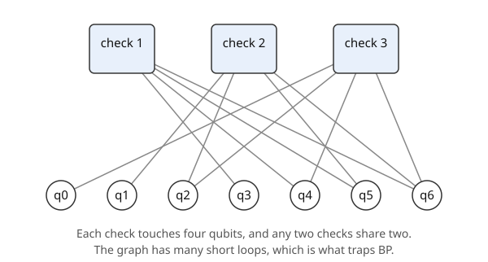

Part 3 · Decoding · Chapter 8 · 5 min read
Belief propagation and why it gets lost
Belief propagation lets checks and qubits trade opinions until they agree with the syndrome. You will step through it by hand on the Steane code and see it stop on a wrong answer.
Key terms
Checks and qubits as a graph
Chapter 7 left the decoder with a task: given the detections, find the likeliest error. The matrix says which qubits each check touches, so draw it as a Tanner graph. Take the single block of Chapter 3 first: three check nodes, seven qubit nodes, twelve lines. Each qubit starts with a prior belief , a large positive number meaning “probably fine”. The simulator’s self-check uses , so .

Belief propagation (BP) is a conversation along those lines. Each check knows its own result, 0 or 1, and tells every qubit it touches what the other qubits make it believe. Each qubit adds what it hears to its prior and passes back the total, minus what that check said. After each round the decoder flips the qubits whose total is negative, and stops when that guess reproduces the syndrome.
The min-sum update
The exact rule multiplies probabilities. The min-sum shortcut keeps the sign and the smallest strength; _minsum in engine/decoders.py implements it. Write for check ’s result, for what qubit tells check , and for the reply.
In words: a check that fired () flips the sign of its advice, and it trusts its other qubits only as much as the least sure of them. A qubit tells a check everything it knows except what that check itself said.
In words: the posterior is the prior plus all incoming messages; the guess marks the qubits whose total went negative.
Why short cycles trap it
On a tree, every message carries independent evidence and BP is exact. In the Steane graph the same three checks share qubits in every possible combination, so lines close into cycles of length four: two checks, two qubits. A message comes back after two steps and is counted again as if it were new, so beliefs reinforce themselves.
Step through the live figure with qubit 6 flipped. That qubit sits under all three faces, so all three checks fire. In the first iteration qubits 2, 4 and 5, which each touch two of the fired checks, are pushed to flip as well, only half as hard as qubit 6, which touches three (posteriors −4.60 against −9.19). Both are past zero, so all four totals go negative together. The guess is qubits 2, 4, 5 and 6, which does reproduce the syndrome 111, so BP stops and reports success. It is wrong twice over: the guess has weight 4 against the true weight 1, and the difference from the true error, qubits 2, 4 and 5, is not a check, so it flips the logical qubit.
This is not a corner case. The self-check feeds all 37 single faults of the three-round model to plain BP, and BP miscorrects 4 of them. The example above uses the bare three-by-seven matrix so that it fits on a screen.
Why it matters here
BP checks only that the guess matches the syndrome, not that it is the lightest guess that does. When it stops on a heavy guess it still reports success. The next chapter keeps the same messages and changes how they are remembered.
Try it in the simulator
Choose Depolarizing noise, p = 0.03, and read the right panel after Run. Plain BP fails more often than Relay-BP, and the difference is the cost of the cycles described here.
Open the simulator with this setupCheck yourself
Why does BP stop on a wrong answer?
Its only stopping test is that the guess reproduces the syndrome. A heavier guess can pass that test, and nothing in the test prefers the lighter one.
What does a cycle do to a message?
It returns to the node that sent it and is counted again as new evidence, so beliefs grow without any new information.
Sources
- F. R. Kschischang, B. J. Frey, H.-A. Loeliger (2001). Factor graphs and the sum-product algorithm. IEEE Transactions on Information Theory 47, 498–519. doi.org/10.1109/18.910572
Supports: factor graphs and the sum-product algorithm. - D. J. C. MacKay (2003). Information Theory, Inference, and Learning Algorithms. Cambridge University Press; free to read online. www.inference.org.uk/itila/
Supports: belief propagation and log-likelihood ratios in decoding. - J. Chen, M. P. C. Fossorier (2002). Near optimum universal belief propagation based decoding of low-density parity check codes. IEEE Transactions on Communications 50, 406–414. doi.org/10.1109/26.990903
Supports: the min-sum approximation. - D. Poulin, Y. Chung (2008). On the iterative decoding of sparse quantum codes. Quantum Information and Computation 8, 987. arxiv.org/abs/0801.1241
Supports: why short cycles hurt belief propagation on quantum codes. - P. Panteleev, G. Kalachev (2021). Degenerate quantum LDPC codes with good finite length performance. Quantum 5, 585. doi.org/10.22331/q-2021-11-22-585
Supports: belief propagation with post-processing on degenerate quantum codes.